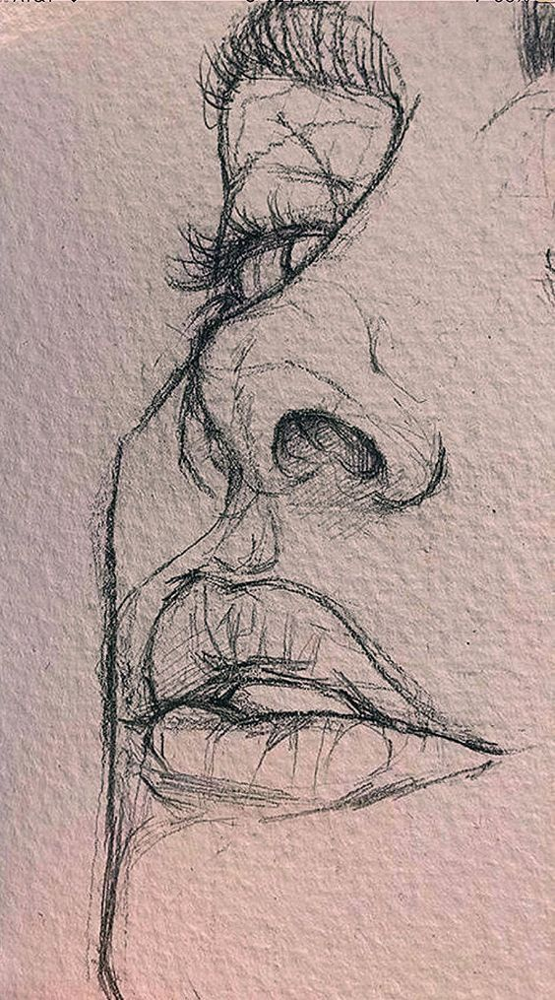
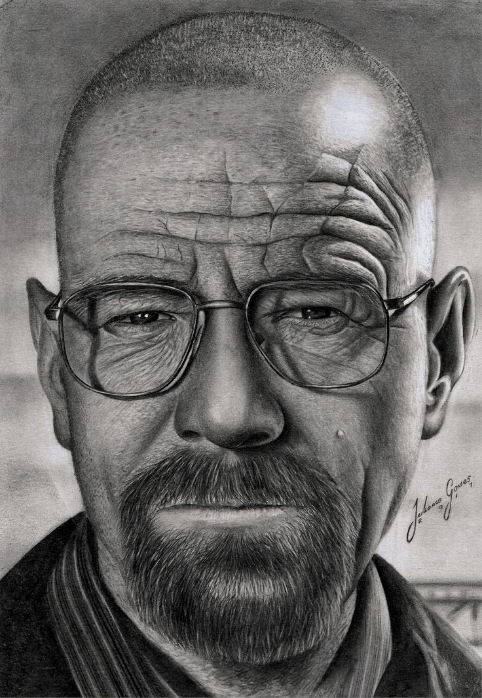
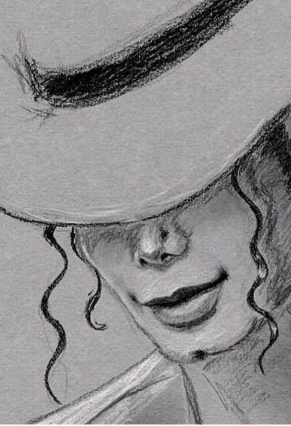
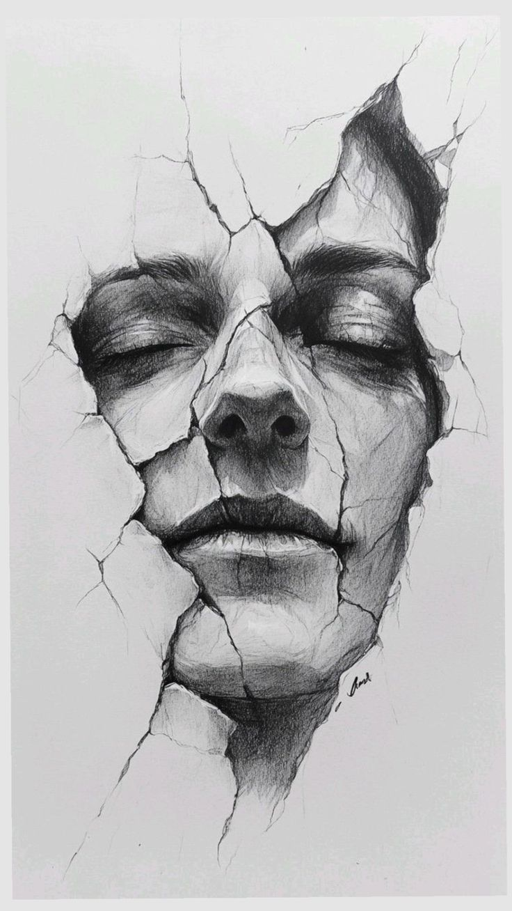
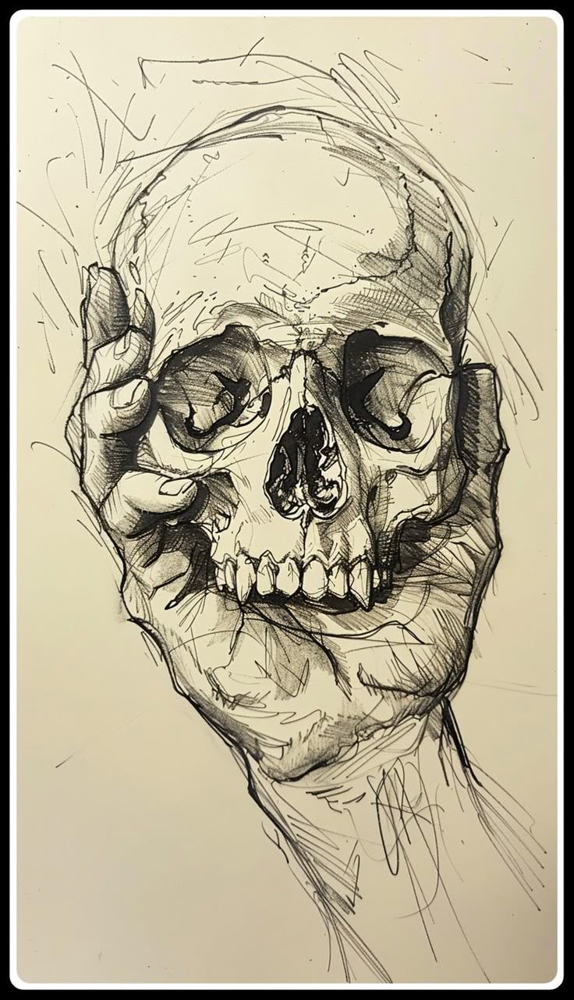

El sombreado es esencial para dar volumen y realismo a cualquier obra. Aprendí desde los trazos básicos hasta técnicas avanzadas de degradado y contraste.
Bienvenido a mi blog
En este espacio te mostrare cual fue mi proceso para aprender y perfeccionar mis habilidades en el dibujo realista.
Tutoriales que me enseñaron a mejora mis habilidades
Mis bocetos del dibujos realistas
Galería





Materiales que use
- Lápices de grafito (HB, 2B, 4B, 6B)
- Carboncillo y difuminos
- Goma moldeable y borrador de precisión
- Papel de alto gramaje para dibujo
Contacto
¿Tienes dudas, sugerencias o un consejo para que siga mejorando? Escríbeme aquí: